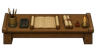

Home › Your ninja › Tree scrolls and locked trees
Tree scrolls and locked trees
In NFRP a ninja only enters some trees after a master teaches the first lesson. In NFRP World that master is a tree scroll: 51 trees open only when a ninja studies their scroll, which also teaches the tree's base technique for free.
51 trees open only with their tree scroll (9 powerful, 17 rare, 25 common). Studying it opens the tree and teaches its base technique free; powerful scrolls need B class. Scrolls come from the scribe desk, traders, the village shop, missions, enemy ninja, wandering masters and ruins. Other trees open by bloodline, title, profession slot or another tree.
Reading a tree scroll
- Select a ninja and right-click the scroll: Study scroll of …. It takes about 2,500 ticks and uses the scroll up.
- The tree opens and its base technique (its stance, posture or perception, or else its first low-rank technique) is learned for free. The rest of the tree is bought with Training Points.
- The tree counts toward the ninja build. If the build has no room for it, the scroll can't be studied and isn't used up.
- A powerful scroll needs a ninja of B class (1,500 TP).
- The four beast arts and the Eight Gates still need their clan gene or World of Naruto's Taijutsu Specialist as well; the gene no longer opens them by itself.
- Trees a ninja already had open in an older save stay open. Village and enemy ninja get their trees from their build as before.
Common tree scroll. Reading it opens Kōsoku Fūin (Binding seals) and teaches Chi to Sumi no Kongō (Blood Ink Mixture) for free.
Market value: $400
Select a ninja, right-click the scroll:
Aiko takes the scroll and studies it (about 2,500 ticks, under a minute of game time at normal speed).
Aiko studied the scroll and opened Kōsoku Fūin (Binding seals), learning Chi to Sumi no Kongō (Blood Ink Mixture).
The scroll is used up. The rest of the tree is now bought with Training Points in the Learn techniques window, up to what the build allows.
Right-click with a D-class ninja:
A powerful scroll: Aiko needs B class (1500 TP) to understand it, and is D class.
Other reasons you may see: the ninja already knows the tree; the build has no free slot of that kind (the scroll is not used up); a beast art or the Eight Gates still needs its clan gene or Taijutsu Specialist.
The Scroll to write button on a ninja who has mastered Binding seals:
Writing: tree scroll of Binding seals. Add the write tree scroll (common) bill at a scribe desk; the ninja writes it there. Rare and powerful scrolls have their own bills with the A- and S-rank writing materials.
The trees
Powerful (9): Hasshinmon (Eight Gates), Onimusha no Taiyoushin (Warriors of the Black Sun), The Pulverem, Kekkai to Makimono Fūin (Barriers and scroll seals), Noroi Fūin (Cursed seals), Tenkai (Heavenly Release), Hensōjutsu (Transformation), Musha Shukke Fū (The Warrior Monk's Way), Shape Transformation (Force).
Rare (17): Busōsen (Arms Flash), Protegra (Sheath Guard), Bajutsu (Riders), Kiken (Chakra sword), Goutetsu (Roaring Iron), Gyakusatsu (Slaughter Sword), Kamijutsu (Hair arts), Kratos no Ishi (Medic Strength), Kumotate (Bear Shield), Meimei Undoushinkei (Divine Reflexes), Wakizashi Kagame (Gem Mirror), Jutsu Kyōka (Jutsu Enhancement), Burēdono Kenseijin (Sword Saint), Ake Sune (Red Leg), Santōryū (Three Swords), The Venator, The Art of the Bard.
Common (25): the six archive illusion schools (Figment, Glamour, Pattern, Shadow, Charm, Phantasm), Iryō to Saisei (Medical skill and restoration), Sadojin (Sand Men), Kentōshi (Brawler), Shokunin no Michi (Artisan paths), Kinjutsu (Forbidden techniques), Kōsoku Fūin (Binding seals), Veritas, the five Gigei skill trees, the four Jūgei beast arts (hive mind, scent, troll, web), Sky Skates, Tensora and Demon Weaver.
Each scroll shows its tree in its name ("scroll of Binding seals") and its base technique on the item.
Where scrolls come from
| Source | Common | Rare | Powerful |
|---|---|---|---|
 Scribe desk: a ninja who has mastered the tree writes it (Scroll to write button, then a write tree scroll bill) | yes | yes | yes |
| Village traders and scroll merchants (about half of them carry one) | yes | ||
| Village shop (diplomacy, goodwill 40+): a random common scroll for 400 silver, 280 for allies, favouring the negotiator's build | yes | ||
| Missions: C and B bonuses (10%), A and S bonuses (12%) | yes | yes | |
| Enemy ninja carry the scroll of a tree they use: common 6%, rare 4% (A and S rank only) | yes | yes | |
| Wandering master: sells 1–2 of their own arts; about a third are powerful | yes | yes | |
| Ruins: temples and scroll caches (powerful 15%, rare 25%, common 40%); labs and old battlefields (4%, 15%, 25%) | yes | yes | yes |
Prices: common 400 silver, rare 1,200, powerful 3,000 (only a wandering master sells those). The writing bills use the materials of the C-, A- and S-rank technique-writing bills.
First trees are free
When a ninja starts a class (level 1), a letter offers a first tree of that kind: a free fighting style, one of the four genjutsu schools, or a medical form. These are NFRP's freebies (stances, perceptions), so picking one also teaches its base technique for free. The letters never offer a scroll tree; other free trees can be bought in the Learn techniques window.
Other locked trees
Not every lock is a scroll:
- Advanced releases (Ice, Wood, Sand, Crystal, Paper): no scroll, teacher, mission or Sharingan teaches them. They come with the bloodline gene, or (Ice, Wood and Sand only) through a rare chakra paper leaning that nature training makes real. See Becoming a ninja.
- Rare arts (Hiraishin, Edo Tensei, Rasengan, Chidori, Shadow Clone, the summoning contracts): their forbidden scrolls, as before. The Kage Bunshin clone arts need the Shadow Clone itself. See Rare arts and legendary blades.
- ANBU: a title from the Kage. Monster Trainer: after Binding seals. Alchemy, Artisan and Rituals: a Miscellaneous slot in the build. See Professions.
- Medical arts (Medical Ninjutsu, Sensor, Soulcaster): a Medical Specialist build.
- Spring Time of Youth: the Eight Gates first.
- Sharingan, Mangekyō, Byakugan and bug techniques from World of Naruto: their eye or host. See World of Naruto techniques.